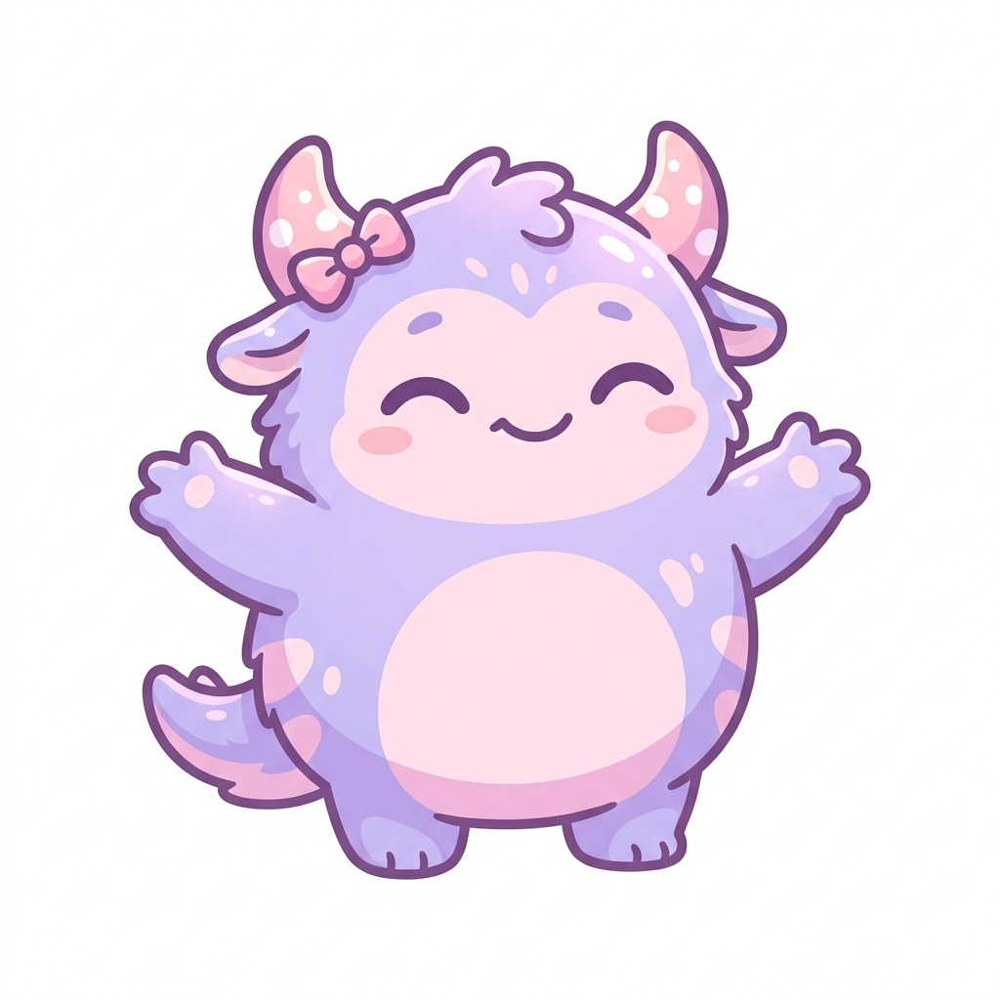

真實情境中，目標使用者（朝九晚五的上班族、壓力大的研究生）是如何在一天中與 App 互動的？
從一則通知開始，到療癒與自我覺察。
每天下班後精神空洞，不知如何整理情緒。期待一個簡單、有趣的方式讓自己釋放壓力，而不是傳統的文字日記。
長期面對論文壓力，深夜容易情緒崩潰，需要一個不評判自己、能陪伴的工具，同時幫助自己追蹤情緒模式。

🥺通知 → 點選心情，整個流程可在 60 秒內完成。疲憊的使用者不需要動腦，降低了放棄的可能。
親密度與 XP 的成長，讓「記錄心情」從義務變成期待。寵物的情緒反應強化了使用者的被理解感。
歷史趨勢圖讓短期的情緒記錄升級為長期的自我洞察，驅動使用者主動調整生活方式。